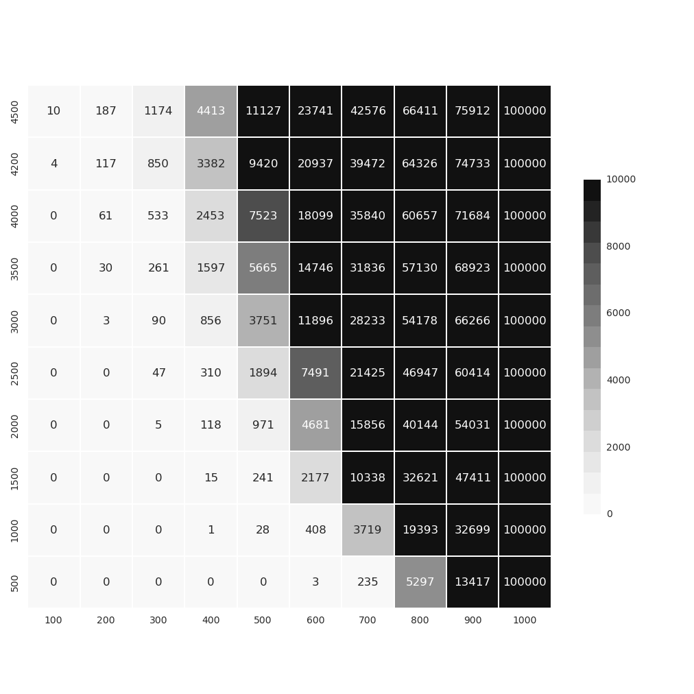

More CUPS¶
%matplotlib inline
import sys
sys.path.append('../lib')
More CUPS¶
I was learning about Boolean algebra and trying to figure if there are some way that knowledge will help me with Bi. As I was playing with it I discovered yet another property of SDP space.
When you map (XOR) vectors with different sparsity/density, an interesting thing happen. If at least one of the vectors is 50% sparse after the operation the result is always vector with 50% sparsity i.e. mapping operation not only preserves similarity but in a sense converts any vector to SDP.
What this means from practical perspective is that we can encode any data type integers, reals, dates, etc… in 10000 bit vector with whatever sparsity, after that we can just map it to become SDP. (I’m still exploring the constraints and ramifications of this discovery, but in the meantime I built a module to provide limited-range Integers)
First the problem :
Lexicon CUP is nice and all, but for every new atom you have to allocate 10_000 bits plus the supporting data structures. Memory footprint by itself won’t be a big deal, but the bigger the lexicon become the slower the cleanup-operation becomes (.best_match()). One option is to implement different type of memory. Kaneva SDM for example, but this type of memory does not return symbol-name as Lexicon does, but only the cleaned SDP.
So the discovery I made opens a second possibility.
The idea goes like this :
You have data in your own format which you want to integrate as atoms/symbols. What you can do is convert this data somehow to 10_000 bit binary without regard to sparsity and then map it to SDP space. I’ve already played with Encoders when implementing bbHTM, so I could leverage that code. Lets diagram the idea :
[Data-type] –> [Encoder] –> [MAPIT] –> [SDP space]
[SDP Space] –> [UNMAP] –> [Decode/BestMatch] –> [Data-type]
Keep in mind that the reverse process can go trough Decode or if we have noisy vector trough .best_match() The interesting nuance is if we just need decoding we can simply use Encoder/Decoder. Otherwise if we work with noisy vectors it can also play a role of Cleanup memory(CUP).
I will call this CUP a MAPPER (Encoding/Decoding/Cleanup).
CUP Integer¶
Instead of creating symbol/atom for every number in the range in the CUP memory physically, we will map them virtually to part of the SDP space and will “intercept” CUP methods to make it behave like one.
In the case of CUPInteger internally ScalarEncoder generates on demand binary vector where chunk of sequential bits represent different numbers. Then this vector is mapped to part of SDP space. In esence no memory is allocated to store the number-symbol, but it is simply encoded/decoded by the encoder-algorithm.
You can have multiple CUPInteger active at the same time, but because they are mapped trough different “map-symbol” they will be different/orthogonal even if they happen to represent the same range of numbers.
from dyn_atoms import *
i = CUPInteger(vmin=0, vmax=100, width=5000)
> Scalar encoder: min:0, max:100, w:5000, buckets:5000, nb:10000
.encode() and the .decode() are the standard Encoder methods.
i.decode(i.encode(25))
25
To work in SDP space use those instead. Which encodes and then maps the value. (BTW: In this specific case even unmapped the encoded values will work in Bi, but I’m coding this for the general case of MAPPER).
i.decode_sdp(i.encode_sdp(25))
25
We can also treat it like CUP i.e.
i.get(33)
0001001011001111001101010100111101001001101000111111110110111010100000101001011101011100011101101111...
i.bm(i.get(33))
'33'
Let’s simulate a noisy vector :
noisy = i.get(33)
sdp.flip_bits(noisy, 500) # add noise
print "distance : %s" % (i.get(33) % noisy)
i.bm(noisy) #resolve the noisy vector
distance : 500
'33'
Two things to see here, the .best_match() does not decode the SDP directly, because as we already know cleanup operations expects noisy vectors. So in this case .bm() will search (noisy vectors can’t be directly matched against encoded vector) in the mapped space for the closest match. What this also means is in some cases the match will be approximate i.e. false negatives are possible. To avoid this we have to select to represent smaller ranges of Integers. In our current case 0-100.
Second .best_match() returns a string i.e. symbol not integer.
So lets repeat use encode_sdp/decode_sdp for clean SDPs and get|bm for noisy SDPs.
I tested CUPInteger for false negatives. In the following image darker color means higher number of false negatives, after taking 100_000 samples (test/cup_integer.py).
X-axis : represent increasing integer-range
Y-axis : represent increasing noise

In case you want it to behave as real integer even ONE false negative is unacceptable. We can see that range of 0-300 fail to recognize the number 5 times out of 100_000 (i.e. 0.00005%) if we flip 2000 bits.
How do you use CUPInteger in Bi ?¶
Very easy.. just pass an instance of it when creating KDB. F.e. :
ints = CUPInteger(vmax=100)
kdb = KDB(items=50, cups=[ints])
Normally if you don’t use CUPInteger you can still use number-atoms, but as I said earlier this will create additional Lexicon entries (i.e. require more memory).
When you pass CUPInteger instance, the KDB now will lookup this new CUP in addition to the default ones and if it resolves the number to atom, will not create a new entry in atom-lexicon (KDB.avivi_atom() and .bm_soa()).